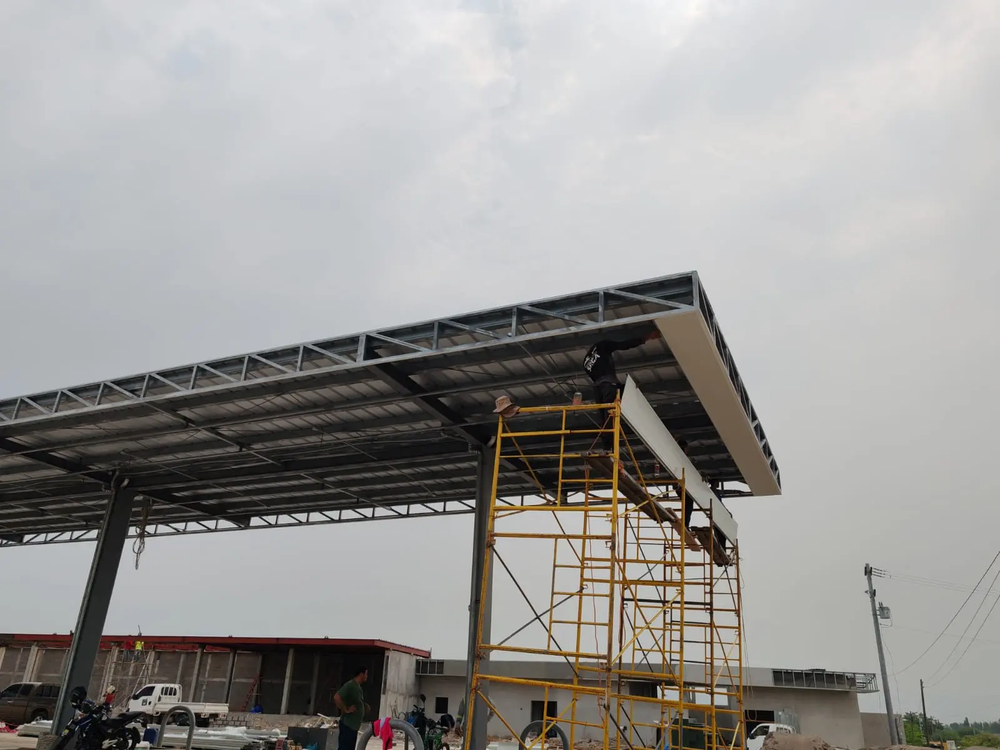
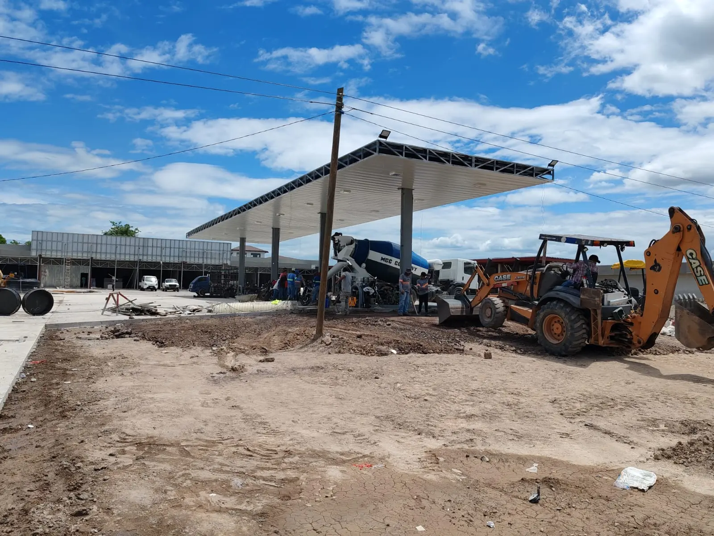

"Una bodega no es un gasto: es un activo logístico. Cada decisión de diseño y construcción se traduce, tarde o temprano, en rentabilidad o en pérdida operativa."
El crecimiento logístico y comercial en Choluteca exige soluciones de almacenamiento que vayan más allá de lo básico. La construcción de una bodega comercial no se trata únicamente de levantar cuatro paredes y un techo: se trata de diseñar un activo estratégico. Para que el proyecto maximice la rentabilidad de su negocio desde el primer día, es vital que tanto su arquitecto como su constructora trabajen alineados en la eficiencia operativa.
En esta guía analizamos los cuatro factores clave que todo inversionista debe considerar al ejecutar una obra comercial o industrial en la Zona Sur de Honduras.
1. Maximización de Metros Cuadrados Productivos
El diseño de su bodega, proyectado por un arquitecto experto en el sector industrial, debe enfocarse estrictamente en la operatividad. Cada metro cuadrado que no se puede usar para almacenamiento o maniobra representa un costo de oportunidad perdido.
- Diseño de planta libre (Clear Span): minimizar las columnas intermedias con estructuras metálicas de alta resistencia permite un flujo ininterrumpido de maquinaria, montacargas y mercancía.
- Altura libre útil: el almacenamiento moderno se mide en volumen. La altura adecuada permite instalar estanterías de múltiples niveles, multiplicando su capacidad sin invertir en más terreno.
2. Velocidad de Ejecución en la Construcción
En el sector comercial, el tiempo de espera es dinero que deja de ingresar. Elegir una constructora que domine los sistemas modernos frente a los métodos tradicionales reduce drásticamente los tiempos de entrega.
El uso de acero estructural (como vigas H) permite fabricar las piezas en taller y ensamblarlas en sitio, acortando el cronograma para que su negocio empiece a generar rentas meses antes. Este mismo principio aplica a los entrepisos: puede profundizar en nuestro artículo sobre el sistema Losacero.
| Factor | Método Tradicional | Estructura Metálica |
|---|---|---|
| Tiempo de obra | Prolongado | Reducido |
| Luz libre (sin columnas) | Limitada | Amplia |
| Inicio de operación | Tardío | Anticipado |
| Ampliación futura | Compleja | Modular |
3. Eficiencia Térmica: El Gran Reto de Choluteca
Con las altas temperaturas que caracterizan a Choluteca, el control térmico dentro de una nave industrial es innegociable. No solo mejora el ambiente laboral, sino que es un requisito si se almacenan productos perecederos o farmacéuticos.
- Cubiertas y paneles termoacústicos: los techos y cerramientos con aislamiento reducen drásticamente la temperatura interior, protegen su inventario y minimizan los altos costos de climatización.
- Iluminación natural estratégica: una buena constructora integra láminas traslúcidas bien posicionadas para aprovechar la luz solar durante el día y reducir el consumo eléctrico.
4. Pisos Industriales de Alta Especificación

El suelo es el elemento que más castigo recibe. Un piso mal diseñado por un arquitecto sin experiencia industrial generará baches, polvo constante y daños en sus equipos.
- Concreto de alto tráfico: es fundamental exigir en su construcción losas con la resistencia adecuada (PSI) y un acabado pulido o epóxico. Esto garantiza la durabilidad ante el tráfico pesado y facilita la limpieza.
¿Quiere conocer los rangos de inversión para su proyecto? Revise nuestra Guía de Costos de Construcción 2026 antes de tomar una decisión.
¿Listo para iniciar su bodega en Choluteca?
Su bodega es el motor logístico de su empresa. Diseñamos y ejecutamos la construcción de espacios eficientes, rápidos y rentables. Agendemos una evaluación técnica de su proyecto.